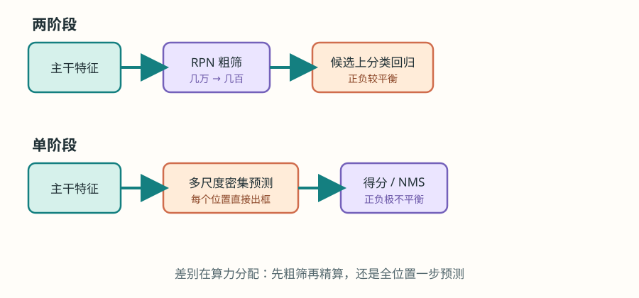
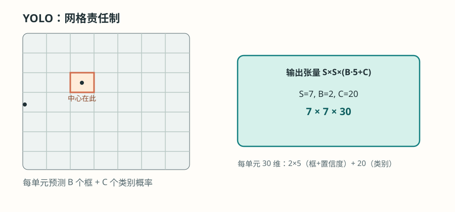
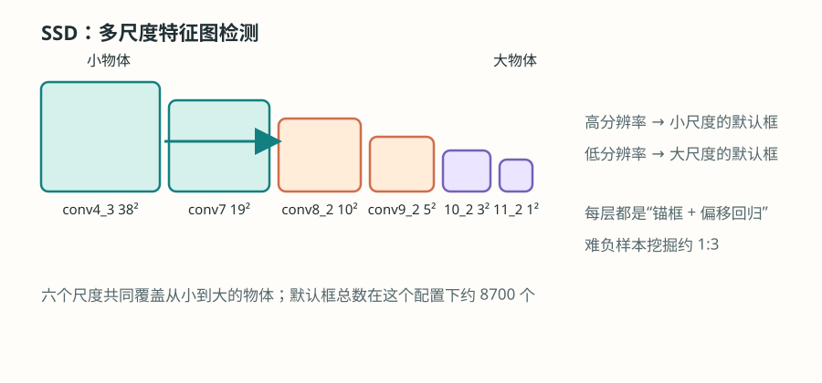
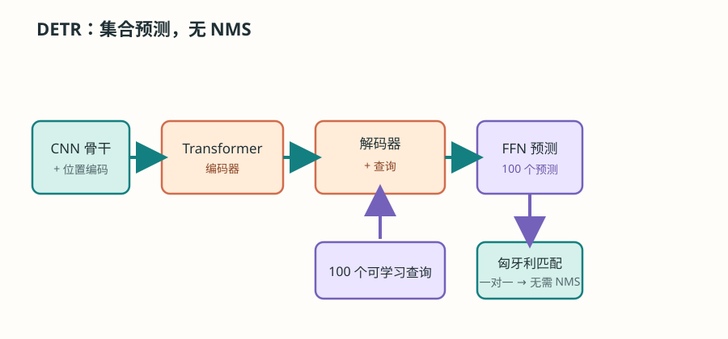

CHAPTER 18 · ONE-STAGE DETECTION
单阶段检测：一次前向直接给出框与类别
两阶段检测先提区域再分类；单阶段检测在密集位置上一次预测。早期单阶段“快而不准”，Focal Loss 与多尺度特征让它追平精度，DETR 又用集合预测把 NMS 也去掉了。
两阶段与单阶段的分野不只是“有没有 RPN”
两阶段检测（Faster R-CNN 为代表）先由 RPN 提出少量候选，再在候选上分类与回归；单阶段检测（YOLO、SSD、RetinaNet 等）直接在密集位置上预测，一次前向就给出框与类别。

更本质的区别是正负样本的分布。RPN 筛选后，进入分类器的正负样本大致平衡；单阶段直接在密集采样上训练，背景（负样本）远多于前景，一个检测器可能面对上千倍的正负比。这个不平衡曾是单阶段精度落后的主因，直到 Focal Loss（RetinaNet，2017）把它正面解决。
| 维度 | 两阶段（Faster R-CNN 类） | 单阶段（YOLO / SSD 类） |
|---|---|---|
| 流程 | 提议 → 分类回归 | 密集采样 → 直接预测 |
| 正负样本 | 筛选后较平衡 | 极端不平衡（背景远多于前景） |
| 小物体 | 通常更有优势 | 依赖多尺度特征图 |
| 典型速度 | 较慢 | 较快 |
YOLO：把检测当作一次回归
YOLO（You Only Look Once，2016）把检测重新表述为回归：一个卷积网络直接从像素预测框坐标与类别概率，没有 RPN，也没有 RoI Pooling。它把图像划分为 S×S 网格（YOLOv1 为 7×7），规定物体中心落在哪个单元，就由哪个单元负责它。每个单元预测 B 个框（v1 为 2）与 C 个类别条件概率，输出张量形状为 S×S×(B·5+C)；在 VOC 的 20 类上即 7×7×30。

confidence 的定义把“有无物体”与“定位质量”揉在了一起：
无物体时 confidence 目标为 0，有物体时目标为预测框与真值框的 IoU；最终按类别的得分再乘上条件概率。
这种设计的优点是快：一次前向即在 Titan X 上达到 45 FPS，轻量版 Fast YOLO 约 155 FPS（数据源：YOLO 论文）。代价也很具体：网格太粗时，中心落在同一单元的两个小物体只能保留一个；直接用全连接回归长宽比，对训练中少见形状泛化差；小物体定位误差偏大。
def yolo_score(confidence, class_probs, class_index):
# YOLOv1：最终类别得分 = 置信度 × 该类的条件概率
assert 0.0 <= confidence <= 1.0
assert 0.0 <= class_probs[class_index] <= 1.0
return confidence * class_probs[class_index]
probs = [0.9, 0.05, 0.05]
assert abs(yolo_score(0.8, probs, 0) - 0.72) < 1e-9
assert yolo_score(0.0, probs, 0) == 0.0 # 无物体则所有类别得分归零
print("score(class 0):", yolo_score(0.8, probs, 0))SSD：用多尺度特征图补上小物体
SSD（Single Shot MultiBox Detector，2016）保留了单阶段的速度，同时用两个设计弥补 YOLOv1 的短板。其一是多尺度检测：低层特征图分辨率高、感受野小，适合小物体；高层特征图分辨率低、感受野大，适合大物体。SSD 从 VGG16 的 conv4_3 开始，在后接的多个逐渐变小的卷积层上各放一个检测器。

| 卷积层 | 特征图尺寸 | 每位置默认框数 | 主要适合的物体尺度 |
|---|---|---|---|
| conv4_3 | 38×38 | 4 | 小 |
| conv7 | 19×19 | 6 | 中等偏小 |
| conv8_2 | 10×10 | 6 | 中等 |
| conv9_2 | 5×5 | 6 | 中等偏大 |
| conv10_2 | 3×3 | 4 | 大 |
| conv11_2 | 1×1 | 4 | 特大 |
其二是默认框（default boxes）加难负样本挖掘。SSD 沿用锚框思路，基于一组预设尺度的默认框回归偏移量（与第 17 章的参数化一致）；由于负样本数量巨大，它用难负样本挖掘控制在约 1:3 的正负比例。SSD300 在 VOC 2007 上报告 74.3% mAP，YOLOv1 报告 63.4% mAP，二者推理速度相当（数据源：SSD 论文、YOLO 论文；不同实现与硬件下速度会有差异）。
SSD 说明了一个容易被忽略的事实：“单阶段”不等于“不用锚框”。SSD 与后来的 YOLOv2 都从 Faster R-CNN 的 anchor 机制中借鉴，锚框逐渐成为检测的“通用语言”。
RetinaNet 与 Focal Loss：平衡正负样本
单阶段检测器的损失被大量“已经分对”的背景样本淹没：它们每个损失很小，但数量极多，累加后盖过了稀缺的前景样本。RetinaNet（2017）的关键不是新结构（它就是一个主干 + FPN + 两个密集预测头），而是一个新的分类损失——Focal Loss：
γ（聚焦参数）越小时退化为交叉熵；γ 越大，越会压低“已经分对”的样本权重；α 用于平衡正负类。
对易分样本（p_t 接近 1），调节因子 (1−p_t)^γ 接近 0，它的损失被几乎忽略；对难分样本，因子接近 1，损失保留。这样很少的难负样本与前景样本就能主导梯度，不再需要对背景做穷举式的重采样。RetinaNet 因此首次让单阶段方法在 COCO 上达到与同时期两阶段方法相当的精度。
import math
def focal_loss(p_t, gamma=2.0, alpha=0.25):
# p_t 是模型对真实类别的预测概率
assert 0.0 < p_t <= 1.0
assert gamma >= 0.0
return -alpha * (1 - p_t) ** gamma * math.log(p_t)
# 易分样本（p_t=0.95）的损失应远小于难分样本（p_t=0.5）
assert focal_loss(0.95) < focal_loss(0.5) * 0.01
# gamma=0 时退化为缩放后的交叉熵
assert abs(focal_loss(0.5, gamma=0.0) - (-0.25 * math.log(0.5))) < 1e-12
print("FL(0.95)=", round(focal_loss(0.95), 6), "FL(0.5)=", round(focal_loss(0.5), 6))DETR：集合预测与匈牙利匹配
DETR（DEtection TRansformer，2020）把检测看成一个集合预测问题：给定固定数量的可学习查询（object queries，通常 100 个），要求网络输出的预测集合与真值集合一一对应匹配。它用 CNN 主干提取特征，用 Transformer 编解码器建模全局关系，再用前馈头输出框与类别。

关键机制是匈牙利匹配：在 100 个预测与真值之间求解一个使总匹配代价最小的双射（没有匹配的真值用“无物体”类补充）。因为匹配是一对一的，不需要额外去重，NMS 自然被去掉；锚框、RoI Pooling 也不再需要。代价是：训练收敛慢，且固定 100 个查询中大多数是“无物体”，推理时需要置信度阈值过滤。
这里要澄清一个常见误读：DETR 不是“把 YOLO 换成 Transformer”，也不是所有 DETR 变体结构一致。Deformable DETR 用可变形注意力改善小物体与收敛速度，DINO 等又加入了 denoising 训练与更好的匹配目标；它们是不同的方法。
如何为一个具体场景选检测器
没有“最好”的检测器，只有更适合某个约束的检测器。下列思路可作为起点，具体型号与版本应结合当下的官方基准与实际部署条件核实。
| 场景约束 | 可考虑的路线 | 主要原因 |
|---|---|---|
| 实时视频、30+ FPS | 轻量单阶段（YOLO 系列、RT-DETR） | 速度优先，精度可接受 |
| 小缺陷、密集小物体 | 两阶段 + 特征金字塔 | 精确定位与小物体召回更有优势 |
| 移动端 / 嵌入式 | 小体量单阶段（nano 级） | 模型体积与延迟受限 |
| 医学影像（非实时） | 两阶段或 RetinaNet 类 | 重精度、时间预算宽松 |
| 快速原型 / 研究 | DETR / Deformable DETR | 框架简洁，易于修改 |
选型时不应只看单一 mAP 数字，还要对齐输入分辨率、评估协议（VOC AP@0.5 还是 COCO AP@[.50:.05:.95]）、延迟口径（是否含后处理、batch 大小、硬件）。这些口径不一致时，公开榜单之间的比较会失真。
两阶段与单阶段正在融合
“两阶段 vs 单阶段”的界线正越来越模糊，最新检测器往往同时借用两边的做法：
- 单阶段借用两阶段的工具：多尺度特征金字塔、PANet 式的跨尺度信息流、解耦的分类/回归头，都来自“先分工再精算”的思想。
- 两阶段借用单阶段的密集预测：RetinaNet 去掉 RPN 的第二阶段，直接在密集位置上用 Focal Loss 分类；Sparse R-CNN 用可学习提议代替密集锚框，缩小了速度差距。
- Transformer 统一：DETR 家族提供的 query-based 框架既不是标准两阶段也不是标准单阶段，用注意力替掉 RPN+NMS+RoI Pooling 的大部分功能。
对学习者而言，比记住“谁属于哪一派”更重要的，是看清两条路线在解决同一个问题：如何在“在哪里找”与“是什么”之间分配有限的算力。理解了这一点，就能读懂后续任何一个检测器的设计取舍。
检查理解：单阶段检测器早期精度落后的主要原因是什么？
主要是密集预测带来的极端正负样本不平衡：背景样本远多于前景，它们的损失累加后主导了梯度。RetinaNet 的 Focal Loss 通过降低易分样本权重直接缓解了这个问题，使单阶段精度追平两阶段。多尺度特征图（如 SSD）解决的是另一个问题——尺度覆盖。
原始资料与评估口径
本页的网格/张量描述、输出形状与置信度定义依据 YOLOv1 原文；YOLO 与 SSD 的 VOC 2007 数字与速度依据各自论文。训练收敛与推理速度受实现影响，不作为可复现基准。
- You Only Look Once: Unified, Real-Time Object Detection (YOLOv1, arXiv:1506.02640)
- SSD: Single Shot MultiBox Detector (arXiv:1512.02325)
- Focal Loss for Dense Object Detection (RetinaNet, arXiv:1708.02002)
- End-to-End Object Detection with Transformers (DETR, arXiv:2005.12872)
- Deformable DETR (arXiv:2010.04159)